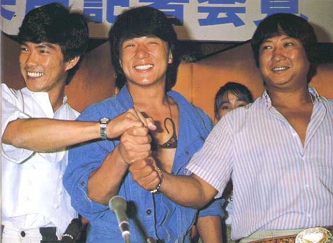
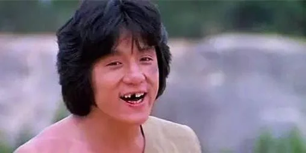
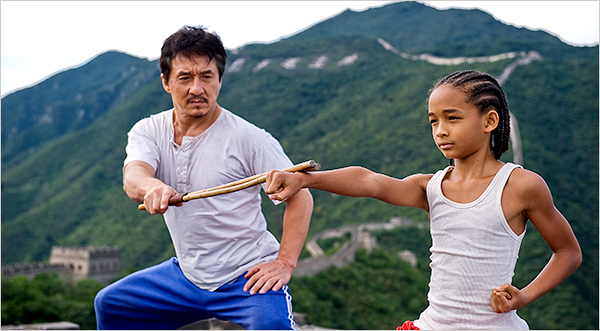

Jackie Chan, was born on April 7th, 1954. His actual name is "Fang Shilong" (成龍) and Jackie Chan is a stage name that harkens back to when he lived in Australia as a young man. He was born in British Hong Kong to refugees from the Chinese Civil War, and he attended the famous "Peking Opera School" as a small child, learning the kinds of acrobatics and martial arts that formed the foundations of his oeuvre.
At the Peking Opera School, Jackie met and trained with Sammo Hung and Yuen Biao, who would later become life-long collaborators in the film industry. The three of them are affectionately called the "Three Brothers" or "Three Dragons", and they very often star alongside, play supporting roles, or direct each other in their films over the decades.
Jackie had small, supporting roles as stunt doubles or as henchmen in other martial arts films. He's an extra in Bruce Lee's "Fist of Fury" and worked as a choreographer in John Woo's "The Young Dragons". In the late 70s, Jackie got his break as a leading actor in films such as "Snake in the Eagle's Shadow" and the original "Drunken Master".

By the early 80s, Jackie had earned enough clout to be poached by rival film companies and dictate the creative terms of his films. In this time he developed his comedic style of action choreography, as well as his more kinetic combat style that drifted away from classic Hong Kong cinema that treated fights more as elaborate dances, into a style that implied and used real impacts to convey a sense of realism and danger. This style often had him putting his body on the line for stunts that resulted in frequent injuries. Although he frequently employed stunt doubles, he earned a reputation for doing doing his own stunts that became increasingly harrowing over time.
With hits like "Project A", "Police Story", and "Armour of God", Jackie not only dominated the Hong Kong film market, but broke out into international stardom. By the 90s, he was making bombastic, large budget films with international partners. Gaining a strong international fandom, especially in Europe, Latin America, and Japan.
With the handover of Hong Kong from the UK to Communist China, Jackie moved to Los Angeles and parlayed his international success with making Hollywood films. He already had popular word of mouth, but movies like "Rush Hour" and "Shanghai Noon" found a lot of success stateside. At this time however, Jackie was deep into middle age and his physical abilities began to be limited by father time, so Jackie attempted to transition into more dramatic roles to varying success.
Today, Jackie continues to act in all sorts of films. He's announced his retirement and unretired. He's done voice over rolls for cartoons, supporting roles in action films, and leading roles in dramatic films. His athleticism is deeply impressive for a man of his age, but now in his late 60s, he's somewhat a shell of his former self. But his filmography stands and has grossed billions of dollars internationally. If you ask me, he's the greatest action movie star of all time.